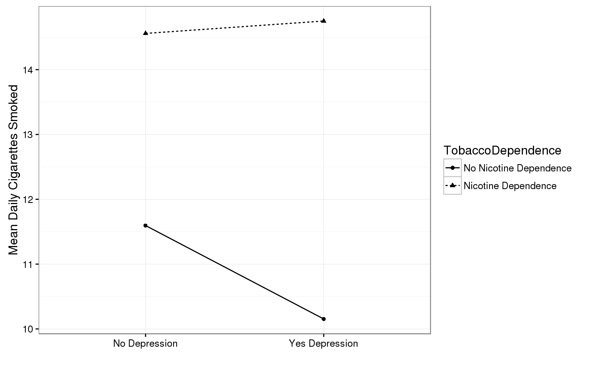
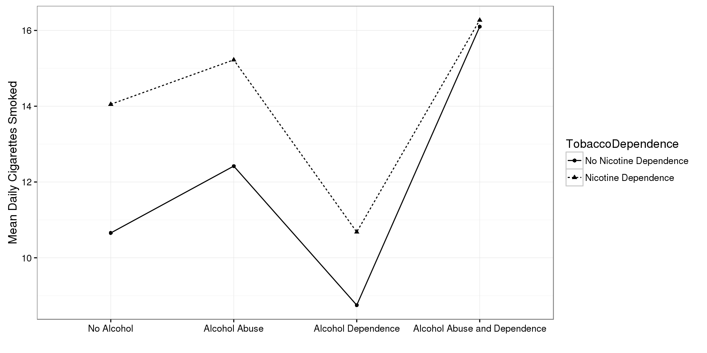

Chapter 14 Chapter
Moderation
Please watch the Chapter 14 Video.
In statistics and regression analysis, moderation occurs when the relationship between two variables depends on a third variable. The third variable is referred to as the moderator variable or simply the moderator. The effect of a moderating variable is characterized statistically as an interaction; that is, a categorical (e.g., sex, race, class) or quantitative (e.g., level of reward) variable that affects the direction and/or strength of the relation between dependent and independent variables. Specifically within a correlational analysis framework, a moderator is a third variable that affects the zero-order correlation between two other variables, or the value of the slope of the dependent variable on the independent variable. In analysis of variance (ANOVA) terms, a basic moderator effect can be represented as an interaction between a focal independent variable and a factor that specifies the appropriate conditions for its operation.9
Examples:
I have hypotheses about the association between smoking quantity and nicotine dependence for individuals with and without depression (the moderator). For example, for those with depression, any amount of smoking may indicate substantial risk for nicotine dependence (i.e. at both low and high levels of daily smoking), while among those without depression, smoking quantity might be expected to be more clearly associated with likelihood of experiencing nicotine dependence (i.e. the more one smokes, the more likely they are to be nicotine dependent). In other words, I am hypothesizing a non-significant association between smoking and nicotine dependence for individuals with depression and a significant, positive association between smoking and nicotine dependence for individuals without depression.
To test this, I can run two ANOVA tests, one examining the association between nicotine dependence (categorical) and level of smoking (quantitative) for those with depression and one examining the association between nicotine dependence (categorical) and level of smoking (quantitative) for those without depression.
mod1 <- aov(DailyCigsSmoked ~ TobaccoDependence,
data = nesarc[nesarc$MajorDepression == "Yes Depression", ])
summary(mod1) Df Sum Sq Mean Sq F value Pr(>F)
TobaccoDependence 1 1120 1120 13.83 0.000233 ***
Residuals 351 28430 81
---
Signif. codes: 0 '***' 0.001 '**' 0.01 '*' 0.05 '.' 0.1 ' ' 1
2 observations deleted due to missingnessmod2 <- aov(DailyCigsSmoked ~ TobaccoDependence,
data = nesarc[nesarc$MajorDepression == "No Depression", ])
summary(mod2) Df Sum Sq Mean Sq F value Pr(>F)
TobaccoDependence 1 2105 2104.7 30.3 4.75e-08 ***
Residuals 960 66681 69.5
---
Signif. codes: 0 '***' 0.001 '**' 0.01 '*' 0.05 '.' 0.1 ' ' 1
3 observations deleted due to missingnessmod3 <- aov(DailyCigsSmoked ~ TobaccoDependence*MajorDepression, data = nesarc)
summary(mod3) Df Sum Sq Mean Sq F value Pr(>F)
TobaccoDependence 1 3241 3241 44.669 3.44e-11 ***
MajorDepression 1 9 9 0.125 0.724
TobaccoDependence:MajorDepression 1 116 116 1.595 0.207
Residuals 1311 95111 73
---
Signif. codes: 0 '***' 0.001 '**' 0.01 '*' 0.05 '.' 0.1 ' ' 1
5 observations deleted due to missingnessThe results show a significant association between smoking and nicotine dependence such that the greater the smoking, the higher the rate of nicotine dependence among those individuals with and without depression. In this example, we would say that depression does not moderate the relationship between smoking and nicotine dependence. In other words, the relationship between smoking and nicotine dependence is consistent for those with and without depression. The interaction between TobaccoDependence and MajorDerpression is not significant (p-value = \(0.206836\)).
tapply(nesarc$DailyCigsSmoked, list(nesarc$TobaccoDependence, nesarc$MajorDepression),
mean, na.rm = TRUE) No Depression Yes Depression
No Nicotine Dependence 11.59513 10.15385
Nicotine Dependence 14.55882 14.75000# Graphing the interaction
ggplot(data = nesarc, aes(x = MajorDepression, y = DailyCigsSmoked,
shape = TobaccoDependence, group = TobaccoDependence,
linetype = TobaccoDependence)) +
stat_summary(fun.y = mean, na.rm = TRUE, geom = "point") +
stat_summary(fun.y = mean, na.rm = TRUE, geom = "line") +
labs(y = "Mean Daily Cigarettes Smoked", x = "") +
guides(fill = guide_legend(reverse = TRUE)) +
theme_bw()
I have a similar question regarding alcohol dependence. Specifically, I believe that the association between smoking quantity and nicotine dependence is different for individuals with and without alcohol dependence (the potential moderator). For those individuals with alcohol dependence, I believe that smoking and nicotine dependence will not be associated (i.e there will be high rates nicotine dependence at low, moderate and high levels of smoking), while among those without alcohol dependence, smoking quantity will be significantly associated with the likelihood of experiencing nicotine dependence (i.e. the more one smokes, the more likely he/she is to be nicotine dependent). In other words, I am hypothesizing a non-significant association between smoking and nicotine dependence for individuals with alcohol dependence and a significant,positive association between smoking and nicotine dependence for individuals without alcohol dependence.
To test this, I run two ANOVA tests, one examining the association between smoking and nicotine dependence for those with alcohol dependence and one examining the association between smoking and nicotine dependence for those without alcohol dependence.
mod4 <- aov(DailyCigsSmoked ~ TobaccoDependence,
data = nesarc[nesarc$AlcoholAD == "No Alcohol", ])
summary(mod4) Df Sum Sq Mean Sq F value Pr(>F)
TobaccoDependence 1 2199 2199.5 35.7 3.53e-09 ***
Residuals 761 46881 61.6
---
Signif. codes: 0 '***' 0.001 '**' 0.01 '*' 0.05 '.' 0.1 ' ' 1
5 observations deleted due to missingnessmod5 <- aov(DailyCigsSmoked ~ TobaccoDependence,
data = nesarc[nesarc$AlcoholAD == "Alcohol Dependence", ])
summary(mod5) Df Sum Sq Mean Sq F value Pr(>F)
TobaccoDependence 1 36 36.05 1.005 0.32
Residuals 60 2151 35.85 mod6 <- aov(DailyCigsSmoked ~ TobaccoDependence*AlcoholAD, data = nesarc)
summary(mod6) Df Sum Sq Mean Sq F value Pr(>F)
TobaccoDependence 1 3241 3241 45.911 1.87e-11 ***
AlcoholAD 3 2631 877 12.425 5.15e-08 ***
TobaccoDependence:AlcoholAD 3 351 117 1.656 0.175
Residuals 1307 92254 71
---
Signif. codes: 0 '***' 0.001 '**' 0.01 '*' 0.05 '.' 0.1 ' ' 1
5 observations deleted due to missingness# Graphing the interaction
ggplot(data = nesarc, aes(x = AlcoholAD, y = DailyCigsSmoked,
shape = TobaccoDependence, group = TobaccoDependence,
linetype = TobaccoDependence)) +
stat_summary(fun.y = mean, na.rm = TRUE, geom = "point") +
stat_summary(fun.y = mean, na.rm = TRUE, geom = "line") +
labs(y = "Mean Daily Cigarettes Smoked", x = "") +
guides(fill = guide_legend(reverse = TRUE)) +
theme_bw()
The results show that there is a significant association between smoking and nicotine dependence but, as I hypothesized, sized, only for those without alcohol dependence. That is, for those without alcohol dependence, nicotine dependence is positively associated with level of smoking. In contrast, for those with alcohol dependence, the association between smoking and nicotine dependence is non-significant (statistically similar rates of nicotine dependence at every level of smoking). Because the relationship between the explanatory variable (smoking) and the response variable (nicotine dependence) is different based on the presence or absence of our third variable (alcohol dependence), we would say that alcohol dependence moderates the relationship between nicotine dependence and smoking.